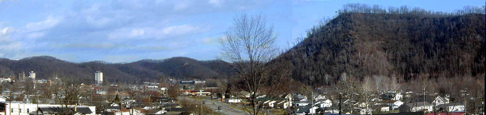
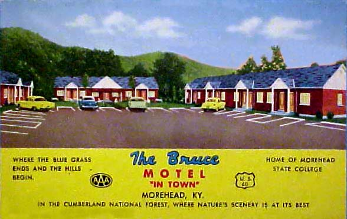
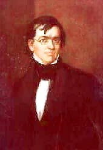

The Courier-Journal Louisville, KY
Monday, February 3, 1992
OUR TOWNS
OUR TOWNS; MOREHEAD; A TOWN SHAPED BY HILLS, HISTORY AND A SCHOOL
JAY BLANTON

When Claire Louise Caudill graduated from medical school in 1946, she could have begun her career in many places with better medical facilities than her native Morehead.
But Caudill belonged at home. "Just look at the hills," she said recently.
Morehead is surrounded by the beauty of the Appalachian foothills. On a snowy day, the mountainous ridges appear to be nothing more than a distant, luminous dream.
They are more than dreams in the life of Morehead, however. In nearly every respect, they are the reality of what Morehead is, and what this bustling Rowan County seat hopes to be.
The hills dictate the ebb and flow of life in Morehead. The rough terrain determines what businesses locate here, and more often than not, what businesses choose not to come.
But people like Caudill, now 79 and still practicing medicine, have chosen to stay here, and in the process have made Morehead special. Many people point to two institutions -- the St. Claire Medical Center and Morehead State University -- as pivotal to the emergence of Morehead as a regional hub for education, health and retail business. And Caudill, in a way, personifies the relationship between the two institutions.
It was Caudill's efforts in the early 1960s that resulted in the building of the medical center named for her. St. Claire is now a regional medical center, with about 800 employees and a number of medical specialists who offer the region's residents medical attention close to home, so they don't have to drive to Huntington, Ashland or Lexington.
And it was a fierce Rowan County feud between distant relatives of Caudill's, the Tolliver family, and another family, the Martins, that in no small way resulted in the founding of the teachers' college that has become Morehead State University. The feud – dubbed the "Rowan County War" -- received national attention and prompted many residents to leave the area.
Today, Morehead residents are proud of their town and eager to talk about the changes that have occurred here.
"We are probably the most progressive town in Eastern Kentucky in the way of growth and what we have going for on for us," said Morehead Mayor Larry Breeze.
It was that progress that prompted Cornell University professor James McConkey to write a book about Morehead and Rowan County. "Rowan's Progress," published by Pantheon Books, traces the community's evolution from violence to vibrance.
"I came back after many years," said McConkey, who taught English at Morehead State in the 1950s. "I was just really astounded by what had happened there."
Much of the change was prompted by construction in the 1960s of Interstate 64, which crosses the county just north of Morehead. The interstate has made the city's outskirts a natural place for fast-food restaurants and shopping centers.
But Main Street suffers chronic congestion, too. Cars never go more than few miles an hour, and they are bumper-to-bumper during rush hour. Stopping somewhere to shop can be an excercise in creativity.
"Right now if you were driving through Morehead and wanted to stop at one of the local businesses, you're afraid to get out of traffic, afraid you can't get back in," said car dealer Larry Fannin, president of the Morehead- Rowan County Chamber of Commerce.
Much of that congestion should be eased by the building of a three-lane, 1.6-mile bypass. Part of the traffic, however, is undoubtedly due to the university -- the town's "No. 1 industry," said C. Roger Lewis, who owns one of the community's largest real-estate agencies.
"It's the main blood. . . . That's the reason that this town's not up and down as much as some of the other places around,"he said.
Morehead State has developed into a vibrant educational institution, known for much more than as the place where New York Giants quarterback Phil Simms played football. Enrollment dropped during much of the 1980s, when the school was immersed in a controversy that prompted two presidents to depart. But in the last six years under President C. Nelson Grote, enrollment grew to nearly 9,000 students.
The school employs nearly 1,000 faculty and staff, making it the county's largest employer. The students also have an economic impact, and in turn draw other people -- parents and friends -- to town.
"They come here and go shopping," Grote said. They go out to Wal-Mart and they go to the Holiday Inn or to Shoney's or to Ponderosa . . . and have a meal and they like that. They're treated well and they come back."
The establishment of the St. Claire Medical Center in 1963 gave Morehead another vital institution lacked by other communities in the region.
After returning to Morehead in the late 1940s, Caudill built a clinic to serve the area, but it was obvious that more was needed. Caudill convinced community leaders and the Sisters of Notre Dame to build a hospital. Today St. Claire is a sprawling medical clinic with 159 beds, and there are plans for a $20 million expansion.

Morehead is somewhat protected from recessions by the stable employment offered by the university and medical center, other state offices and the lack of large industry, community leaders say. Yet many say that other businesses need to be encouraged, in particular, wood products.
Morehead is the biggest producer and exporter of veneer wood in the state, and the fourth largest in the nation, said Tom Calvert, executive director of the Morehead-Rowan County Economic Development Council.
"If nothing else, you've go to look at that and say 'Wow, that's big time,' " Calvert said. But more must be done to encourage the local production of finished wood products such as furniture, he said.
Late last year, area leaders formed the council to try to attract more industry. Morehead leaders also hope the region can capitalize on nearby Cave Run Lake, the state's fifth largest, to promote tourism. Tentative plans exist for a large lodge and golf course.
Calvert noted that Cincinnati "has the fifth highest boater registration in the nation, and they don't have a lake to put it on." People from Ohio, he said, are down at the lake every weekend. The key is to make the lake a vacation spot, rather than just a place to spend the weekend.
For most people in Morehead, the city is the only place they would ever want to be. You can drive through town and note the number of businesses that have been handed down from father to son, some for more than two generations.
Alpha Hutchinson, chairman and chief operating officer of Morehead's Citizens Bank, has traveled extensively throughout the nation and Europe, but he says he wouldn't live anywhere else.
"I like to travel abroad -- Europe, Africa, Hawaii, England, Scotland, Wales, Ireland, all over Europe," Hutchinson said. But when "I get back to the hills, I'm anxious to get my cornbread, my soup beans. . . . I get back down to normal."
In all likelihood, it is the dream-like but unyielding hills that have fostered the resiliency and devotion in Morehead's residents. It has made them endure, and in many instances, prosper.
It was a dream that brought McConkey, the Cornell professor, back to Morehead. A few years ago, he said, he dreamed about the time his young son cut his lip badly while playing with the family puppy. Caudill prepared to stitch the cut, but she was exhausted after returning from the hills, where she had been caring for patients and going days without sleep.
Caudill asked McConkey's wife to hold her hand so it wouldn't shake. Recalling that episode, McConkey said, made him realize after the dream how much Caudill had given of herself to the people and the region.
"It just struck me (that) we spend so much of our time bewailing the limitations of what people can do and wondering if there is such a thing as good in the world," he said.
Around Morehead, Caudill is known as the "baby doctor," or simply "Dr. Louise." She is something of a household name, having delivered an estimated 8,000 babies in her more than 40 years in the area.
Although Caudill's modesty during an interview does little to drive home the point, few residents have played such an integral role in the community's development.
Early in his book, McConkey recounts a conversation with Caudill as he departed Morehead for Cornell, the Ivy League school in Ithaca, N.Y.
Caudill said: "I always figured you'd leave."
"Why did you think that?," McConkey asked.
"Because you're too good for this place," she said, with a sweep of her arm large enough to include everything -- the surrounding hills as well as the town itself."'
Years later, McConkey said, "If I truly were good, Louise, I'd stay here, as you do."
POPULATION (1990): Morehead, 8,357; Rowan County, 20,353. PER CAPITA INCOME (1989): Rowan County, $10,289, or $3,534 below the state average. JOBS IN COUNTY (1989): Manufacturing, 869; Wholesale & Retail Trade, 1,803; Services, 1,214; State/Local Government, 2,069; Contract Construction, 273. BIG EMPLOYERS: Sealmaster Bearings-Morse Industrial Corp., 310; Cowden- Morehead Co., 140; Ken-Mor Stone Company, 69; Homer Gregory
Co., 58. MEDIA: Newspapers -- Morehead News, twice a week; The Menifee News, weekly; The Trail Blazer, Morehead State University student newspaper, weekly; WMKY-FM 90.3, public radio; WMOR, 1330 AM; WMOR, 92.1 FM. TRANSPORTATION: Highways -- Interstate 64 and U.S. 60; KY 801, 32, 377 and 519. Air -- The Morehead-Rowan County airport is 5.5 miles southeast of Morehead; Blue Grass Airport in Lexington is 68 miles west of Morehead; Tri- State Field near Huntington, W. Va., is 60 miles east. Rail -- Direct rail service to Morehead is not available. The nearest service is provided by the CSX Transportation
Company at Winchester, 46 miles southwest. EDUCATION: Rowan County schools (3,062 students). Morehead State University, (8,622 students fall, 1991). TOPOGRAPHY: Morehead is in the foothills of the Appalachian Mountains.
FAMOUS FACTS AND FIGURES
- Morehead incorporated as town by the Kentucky legislature on January 26, 1869.
- Morehead was the center of the "Rowan County War." On Election Day in 1884, a gunfight broke out after the polls closed. For the next three years, a bitter feud between two families, the
Tollivers and the Martins, raged in Rowan County. The fighting was so fierce that many families moved out of the community. Twice the state militia was called in, but the feuding continued. Angry citizens finally took matters into their own hands, cornering many in the group in a hotel where most of men in the feuding families were killed.
- Morehead State University is indirectly the result of the feud. As the state militia came in to settle the dispute, the Disciples of Christ established a school and church. The school was the forerunner of the university. - In 1909, Cora Wilson Stewart, who was trained at Morehead
Normal School, began what came to known as the "Moonlight School." Classes were held at night because most of the illiterates she taught worked during the day. Teachers were expecting only 150 students when the school was started, but 1,200 arrived. In the school's second year, 1,600 enrolled. Illiteracy declined significantly.
- Rowan County was formed in 1856, from parts of Fleming and Morgan counties. It was named for Judge John Rowan, a jurist and
 |
Governor James Morehead |
former U. S. Senator. The county seat was named for Gov. James T. Morehead.
- The county courthouse was burned by guerrillas on March 21, 1864. It was one of 22 Kentucky courthouses burned during the Civil War.